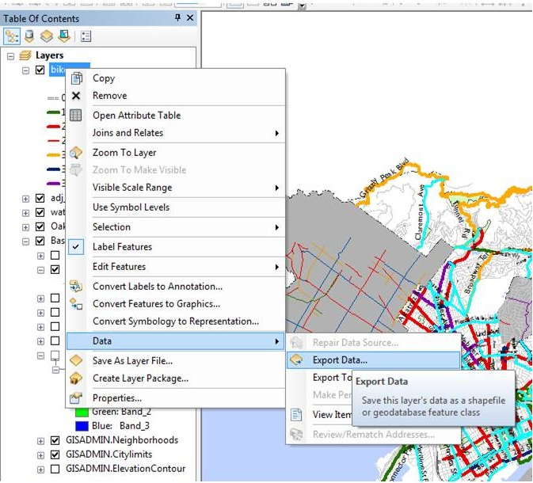

In response to the many requests we get of our proposed bike lanes, this is a way to symbologize only proposed bikeways, and/or to export a layer when needed.
-open an .mxd and add the BikewayNetwork feature class from the Oracle server
-join to the current database spreadsheet (in \\oakland\pwa\Transportation\Bike-Ped_Program\GIS\data_share\Current-Geodatabase\Linked_Tables)
-open the bikeways attribute table
-run the SQL quiery below in the "select by attributes" tab to isolate the data to just segments that are proposed to be installed or upgraded (use the attrributes from Linked Table current version, not the Oracle server version).
ExistingClass <> ProposedClass AND ProposedClass <> '0'
-once the data is selected, export the features to a new feature class in the master.gdb (see image below)
-name the new feature class "proposedbikewaysnew"
-
-once the new feature class is created copy the metadata from the old file into the new feature class.
-change the "last updated" date.
-delete the old feature class.
-rename the new feature class to "ProposedBikeways"
Done :)